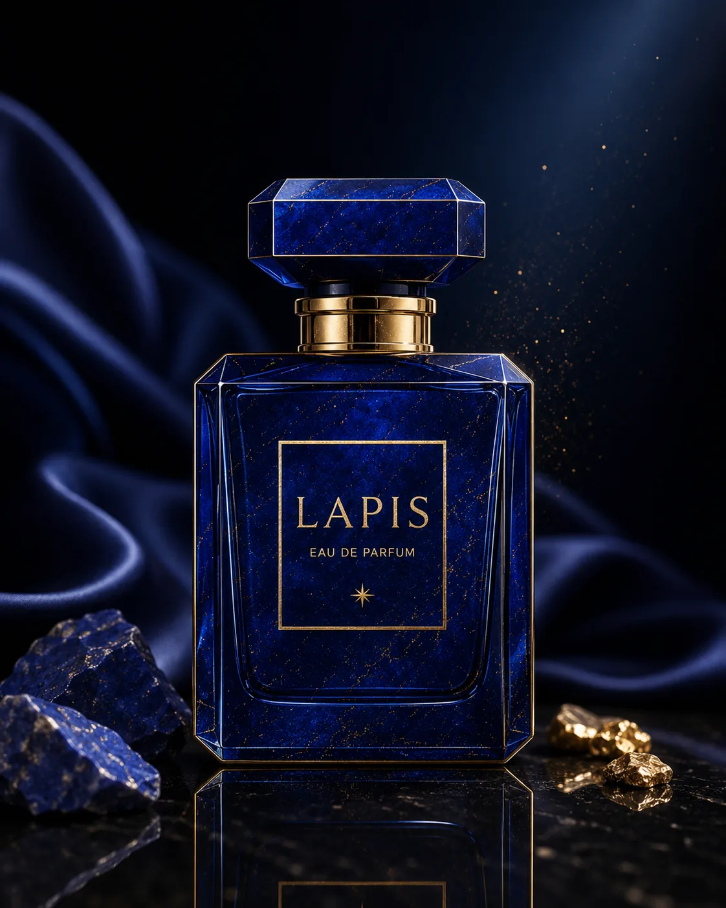
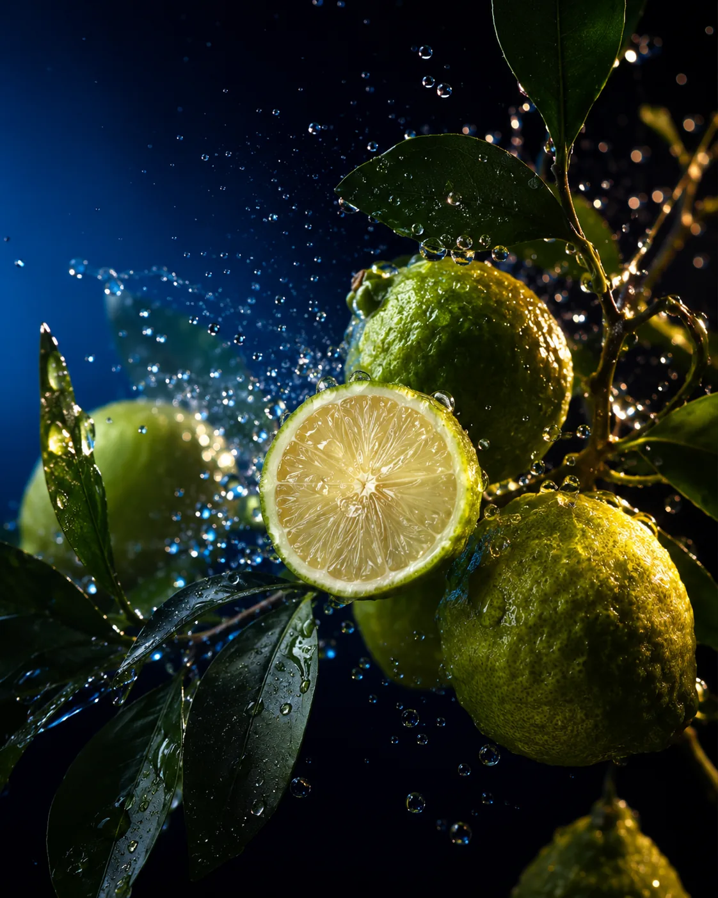
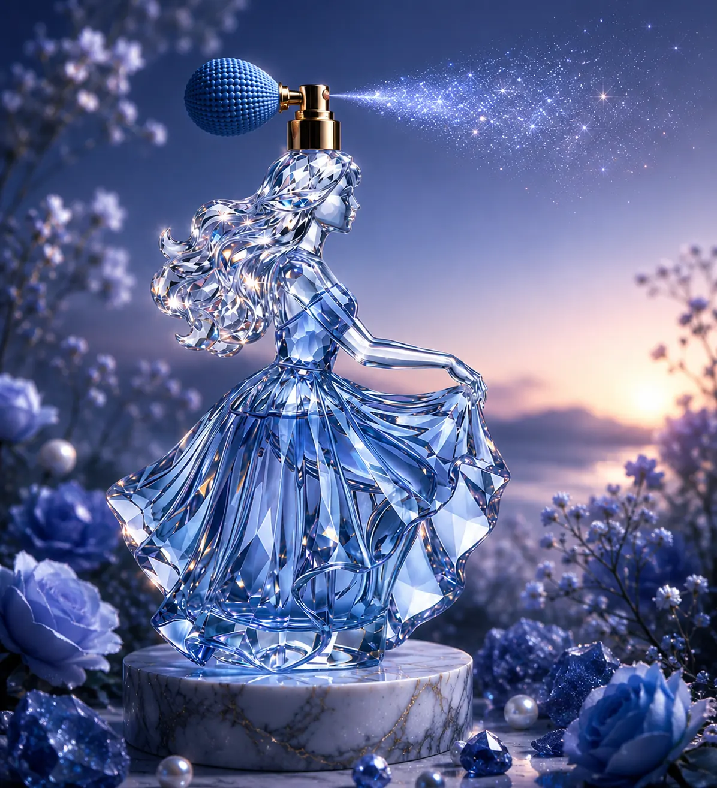

BRAND STORY
왜 라피스인가
청금석은 오랫동안 밤하늘의 색을 담은 돌로 여겨졌다.
라피스는 그 빛깔 위에 한복 저고리의 곡선을 겹쳐, 서양의 조향 문법과 한국적 실루엣이 교차하는 지점에서 태어났다.
당신의 조용한 순간은?
그 순간, 여기 잠시 머뭅니다.
깊고 푸른 우아함, 말보다 먼저 남는 존재감.

청금석은 오랫동안 밤하늘의 색을 담은 돌로 여겨졌다.
라피스는 그 빛깔 위에 한복 저고리의 곡선을 겹쳐, 서양의 조향 문법과 한국적 실루엣이 교차하는 지점에서 태어났다.

세 가지를 고르고, 닿고 싶은 순간을 한 줄로 남겨 주세요.

사파이어 블루의 조용한 존재감

달빛 아래 새로운 뮤즈를 준비 중입니다
한복의 곡선과 청금석의 빛깔에서 브랜드의 언어를 길어 올린다.
모든 병은 손끝에서 완성되며, 완벽하지 않은 결까지 그대로 남긴다.
원료는 책임감 있게 소싱되고, 병은 다시 채워 쓸 수 있도록 설계된다.